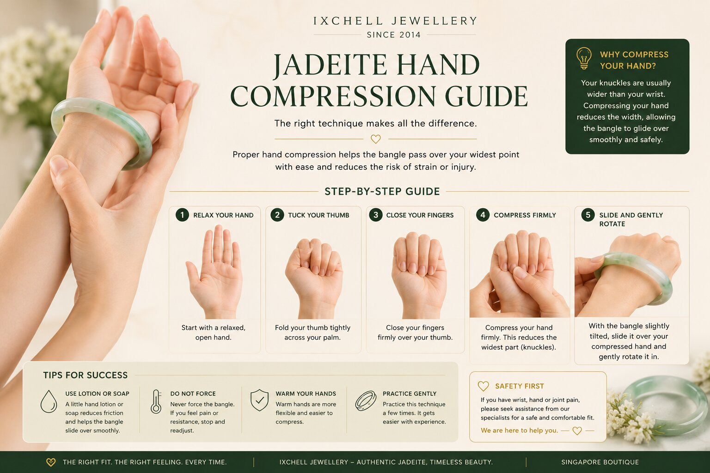
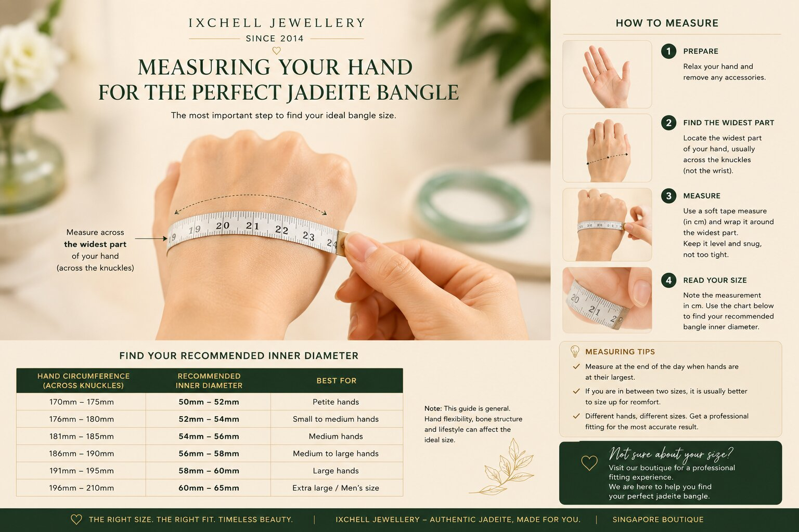
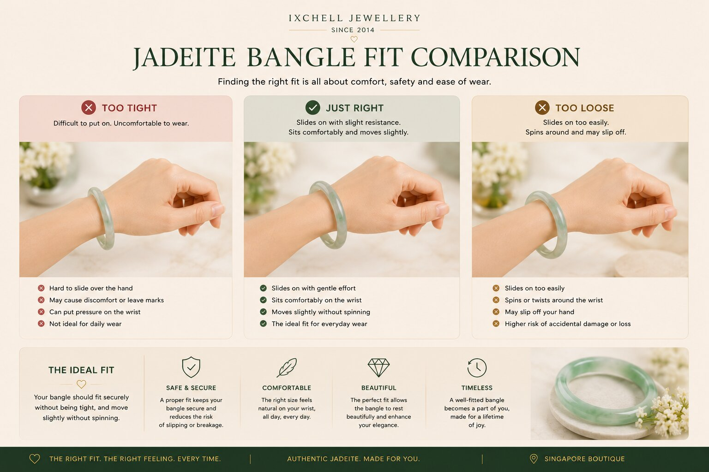
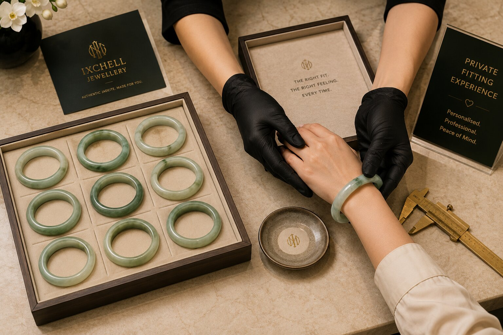
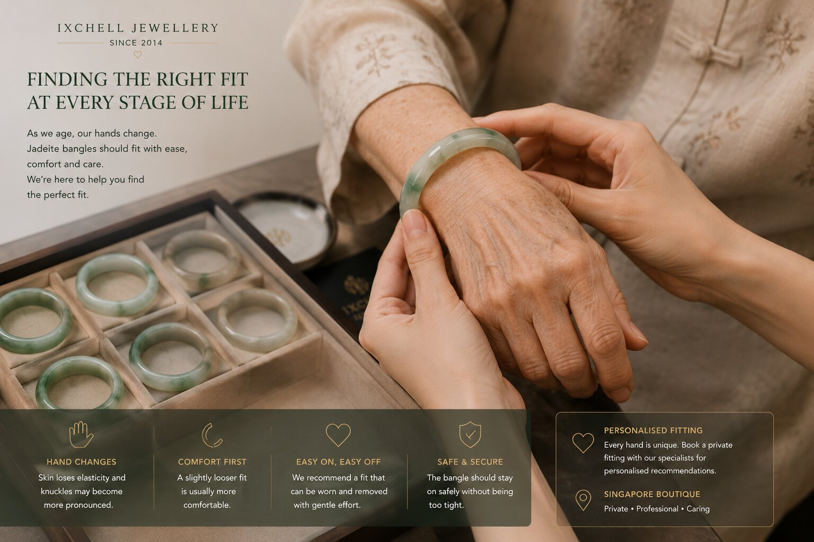

Jadeite bangle sizing is not only about wrist size. It depends on hand compression, flexibility, bone structure, lifestyle, age, and comfort.
A solid jadeite bangle only needs to pass one obstacle: your compressed hand.
Some people with slimmer bodies naturally require larger bangles due to broader knuckles, stiffer thumbs, stronger palm muscles, or reduced flexibility.
Even 1mm can completely change how a rigid Type A jadeite bangle fits.

Bangle sizing is biomechanical.
Hand flexibility, thumb positioning, muscle density, ligament stiffness, and knuckle width all affect your ideal fit.
This is why professional fitting often produces a more accurate result than online guessing.
A comfortable fit should feel secure, natural, and safe.

The correct jadeite bangle size is not the smallest size you can force through. It is the size you can wear comfortably for years.
A proper jadeite fit should move gently without excessive force or painful pressure.
A bangle that is too tight may bruise the hand, stress the stone, or become difficult to remove.
A bangle that is too loose may rotate excessively or strike the wrist bone repeatedly.
Comfort and elegance should always work together.

Weightlifting, Pilates, yoga, sports, manual work, and aging all affect hand flexibility and structure.
More muscular or rigid hands often require slightly larger inner diameters compared to softer or more flexible hands.
Older hands may also require gentler fitting due to joint changes and reduced compression flexibility.
The best fit is the one that feels naturally wearable every day.
Professional fitting helps avoid sizing mistakes, unnecessary force, and uncomfortable wear.
At Ixchell Jewellery, we compare multiple sizes calmly in person while considering your comfort, flexibility, hand structure, and lifestyle.
This is especially important for rigid Type A Burmese jadeite bangles.
Every hand is different. Every jadeite fit should be personalised.

Older hands often require different fitting considerations compared to younger hands.
Decades of housework, manual labour, exercise, arthritis, or joint changes can reduce hand compression flexibility.
Comfort-first fitting becomes increasingly important over time.
A jadeite bangle should feel elegant — not painful.

The best way to choose a jadeite bangle is still to compare sizes calmly in person under proper guidance and lighting.